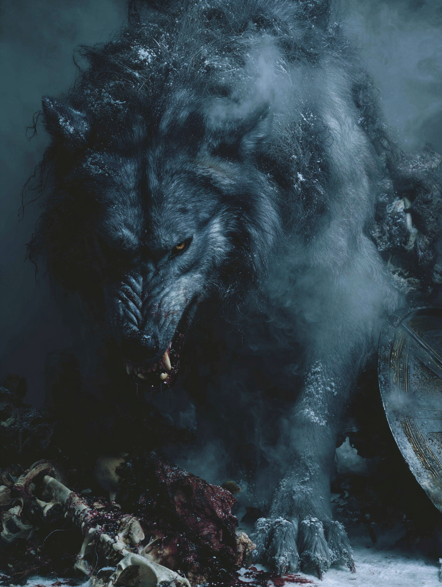

Overview
Physical Form
At containment size: a wolf of impossible mass, fur like iron shavings, eyes that emit a dull red light visible at distance. The binding chain — Gleipnir, made of the sound of a cat's footsteps, the beard of a woman, the roots of a mountain, the sinews of a bear, the breath of a fish, and the spittle of a bird — holds him only because it was made from things that do not exist. When he strains against it, mountains shift. His breath at rest causes distant forests to bend. Unbound, the Eddic texts say, his lower jaw touches earth and his upper jaw the sky.
The Record
In the Prose Edda (Gylfaginning 34–38), Fenris is the offspring of Loki and the giantess Angrboða — the same lineage that produced the Midgard Serpent and Hel. The gods kept him at first, feeding him daily. He grew. Each attempt to bind him with stronger chains he broke. Finally Gleipnir held — but only because he allowed it, and only because the god Tyr pledged his hand as surety. Fenris bit the hand off when he discovered the pledge was betrayal. He has been bound on an island, a sword propped in his jaws to hold them open, drooling rivers, awaiting Ragnarök. At world's end he is fated to swallow Odin.
Threat Classification
Beyond mortal category. The Eddic texts place Fenris in the same class as the Midgard Serpent — world-scale threats that cannot be killed by conventional means. In the Nephilim Chronicles framework he represents the endpoint of unchecked biological corruption: what happens when supernatural genetics run unconstrained for long enough, when a being is not a hybrid of two things but has become a third thing entirely — new, enormous, and not compatible with the continued existence of the current age.